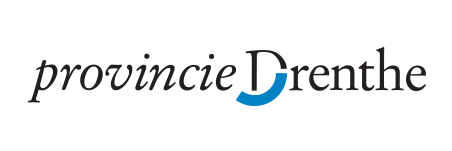

Digilink Drenthe
De digitale werkplaats Drenthe werkt onder de naam Digilink Drenthe. Met de inzet van studenten zorgen we voor slimme digitale oplossingen voor het midden- en klein bedrijf. Digilink Drenthe heeft drie satelliet vestigingen in Drenthe: Techhub Assen, Kennispoort Emmen en IThub in Hoogeveen.
Samenwerkingsverband
Digilink Drenthe is een samenwerkingsverband van NHL Stenden Hogeschool, Hanzehogeschool Groningen, Provincie Drenthe, Drenthe College en het Alfa-college. De werkplaats wordt ondersteund door de Rabobank en – via Ik Ben Drents Ondernemer – alle Drentse gemeenten en VNONCW-MKB Noord.
